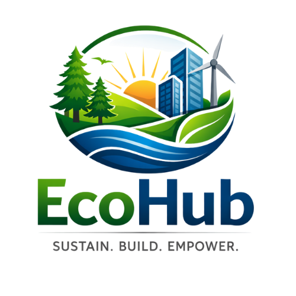

Our Initiatives
Our initiatives reflect our commitment to building a united, responsible, and engaged society. Through partnerships and community-driven action, we support programs that nurture dignity, opportunity, and national cohesion.

Mtoto Ni Jamii
Mtoto Ni Jamii is a community-based initiative dedicated to the well-being, protection, and empowerment of children and young people. The program focuses on education, mentorship, dignity, and social responsibility within families and communities.
As a values-aligned partner initiative, Mtoto Ni Jamii reflects our shared belief that nurturing responsible citizens begins with investing in the next generation.
Visit Mtoto Ni Jamii Website
Mtoto Ni Jamii
EcoHub is a sustainability-driven platform integrating climate advocacy, engineering solutions, waste management to deliver practical, long-term environmental impact. Works at the intersection of infrastructure and innovation to build systems that are responsible, scalable, and community-centered.
Visit EcoHub WebsiteLooking Ahead
As Kabila Yetu Ni Kenya grows, we aim to support and collaborate with other initiatives that promote development, civic awareness, youth engagement, community empowerment, and national unity across the country.